History of Lutes
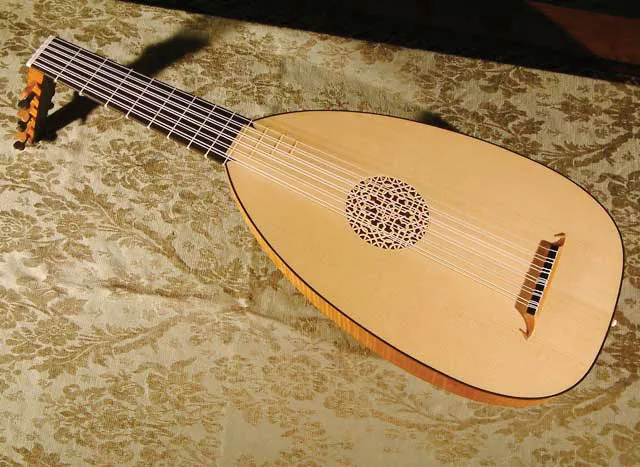
The Lute is a plucked instrument notable for its egg-like shape, flat face and angled pegbox. It stems from the "Oud" instrument from Arabia and made its way over to Europe during the Moorish occupation of Iberia during the 8th and 9th centuries. The original Oud also stems back to Persian instruments called "Barbud," which will also have stemmed from more ancient instruments in India. What differentiates the Lute from Ouds is the innovative addition of frets on the fingerboard, allowing the strings to have a more pronounced sound by effectively "moving" the nut of the instrument and not muting the sound with the fingertips. Frets also gave more musical flexibility with playing because they allowed for an increased intonational accuracy and better playing of chords. Lute strings, as well as their frets, were made of soft gut strings made from sheep intestines, so players would usually pluck the strings with their fingers wrather than a feather like the Oud. Lutes are the instrumental ancestors to the modern Guitar and Mandolin instruments we know of today. A craftsman who specializes in making instruments of all types is called a "Luthier," directly coming from the word Lute.Making of Lutes
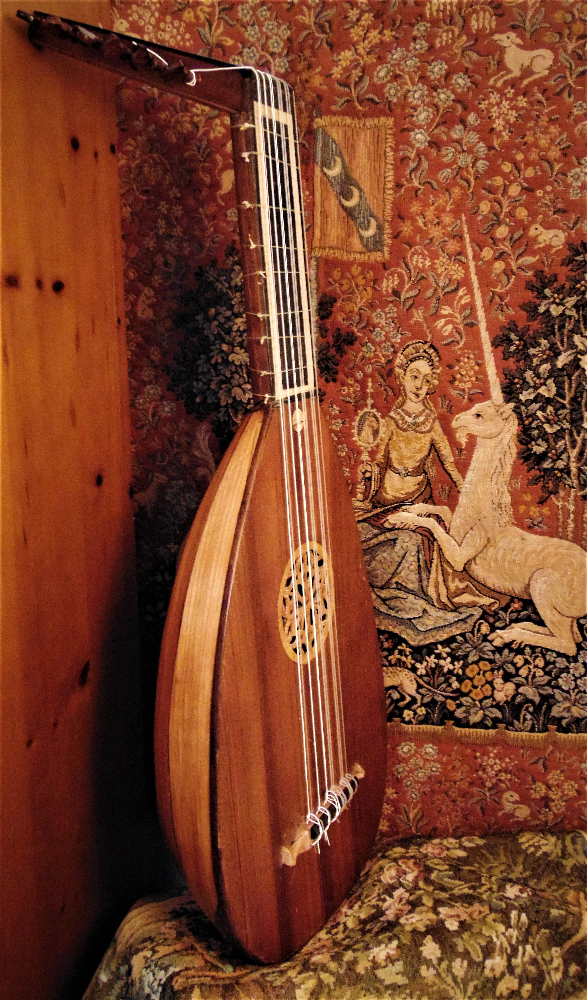
Lutes have multiple sets of strings that have fluctuated in number through history. Each string is doubled with an identical string, usually tuned an octave higher to give the isntrument a brighter sound. Most lutes will have a "song string", a singular string tuned the highest used for melodic lines. As lute making evovled, we will also see lower and lower strings being added, requiring a longer extension at the pegbox to resonate the sound.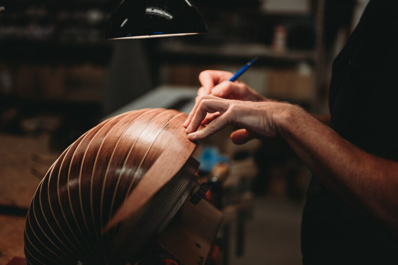
Lutes are made by making the main parts of it separately, then assembling them together after each individual part is finished. The bowl of the lute is made by gluing together thin strips of wood called "ribs" to create the rounded shape over a template of the bowl made of wood chunks. The ribs are bent by soaking them in water and bent into shap with a hot iron. The ribs are usually made of hardwoods like maple or rosewood. The face of the lute is made of two spruce pieces and glued on top of the bowl, with a sound hole cut out in the middle. This sound hole is called a "rose" and is usually decorated with intricate patterns. The neck and pegbox are also made separately and attached to the bowl. The neck is made of hardwood and has a fingerboard glued on top of it, with frets made of gut tied around it. The pegbox is made of hardwood and has holes drilled into it for the tuning pegs, which are also made of hardwood. The strings are then attached to the pegbox and the bridge, which is glued to the face of the lute. Finally, the lute is varnished to protect the wood and enhance its appearance.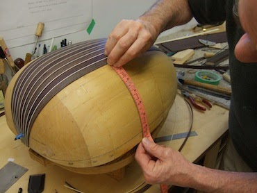
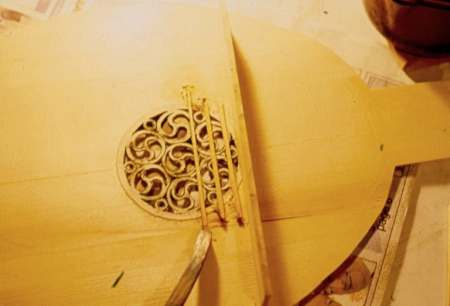
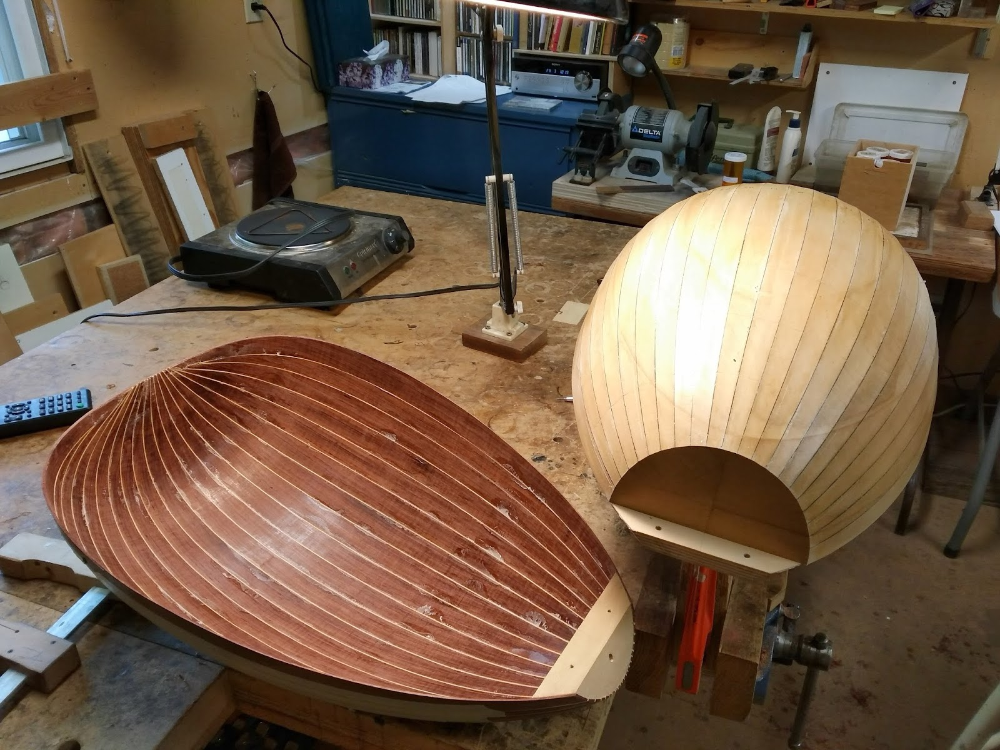
Lute types and Families
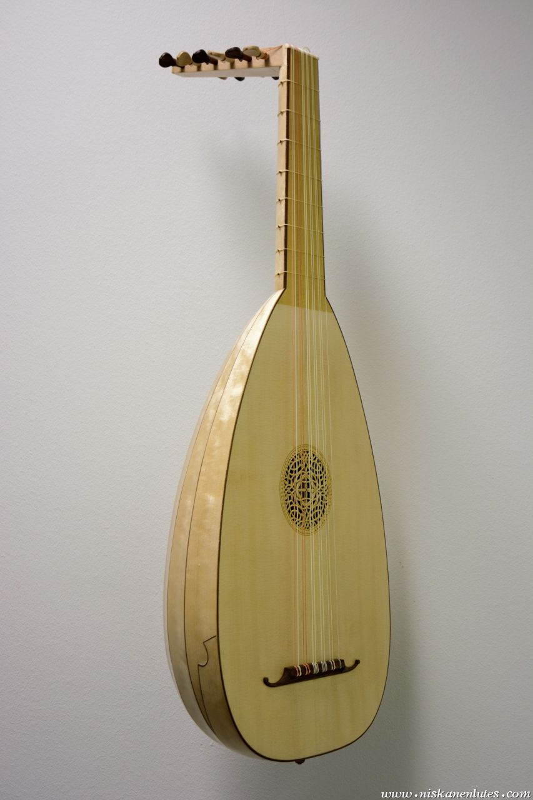
Lutes have evovled over time, with the Renaissance Lute being one of the earliest types of Lutes. It has 6 (or up to 10) courses of strings, with the lowest course being a single string and the rest are doubled. Being one of the ealiest types of lutes, it is relatively smaller in overall size and has a shorter and thinner neck, smaller pegbox and a smaller bowl. For its time, it was a very popular instrument and was used in many different types of music, from courtly music to folk music. It was also used as a solo instrument because of its unique capability for polyphony. It was also seen as an accompaniment for singing.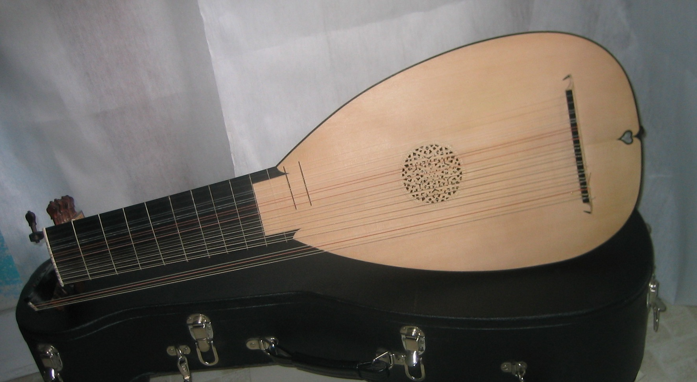
The Baroque Lute is a later type of lute that evolved during the Baroque period. It has more courses of strings than the Renaissance Lute, giving it a much wider neck and a larger pegbox to accommodate the extra strings. The bowl of the Baroque Lute is also larger than that of the Renaissance Lute, giving it a deeper and richer sound. A desire for lower bass strings led to the addition of more strings, however to accommodate them, an additional set of pegs and extensions were added to the neck. The Baroque Lute was used in a variety of musical settings, including solo performances, chamber music, and orchestral music. A lot of the time, they fullfilled a similar role to the Harpsichord, providing a harmonic and rhythmic foundation for the music. It was also used as an accompaniment for singing, and was often used in operas and other vocal music.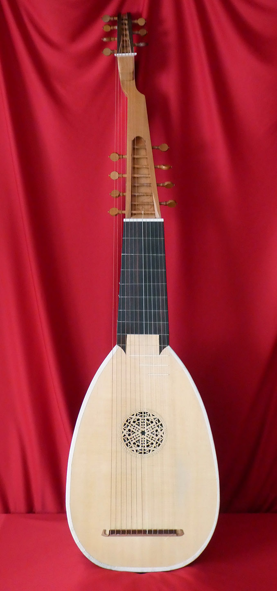
The Archlute is a type of lute that emerged during the 18th century. It is characterized by its large size and deep sound, making it suitable for both solo performances and ensemble playing. The Archlute typically has a longer neck and a larger body than the Baroque Lute, which contributes to its rich and resonant tone. It was particularly popular in Germany and other parts of Europe during the Classical period. It served as a compromise between the smaller lutes and the massive theorbo.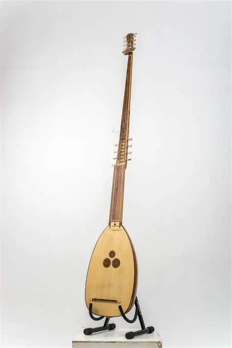
The Theorbo is a type of lute that emerged during the late Renaissance and early Baroque periods. It is characterized by its massive size and long neck, which allows for a greater number of strings and a great deep sound. The Theorbo has a second pegbox that extends from the main pegbox, allowing for additional bass strings to be added. The Theorbo was primarily used as a basso continuo instrument in Baroque music, providing a harmonic foundation for ensembles and orchestras. It was also used as a solo instrument, showcasing its unique sound and capabilities.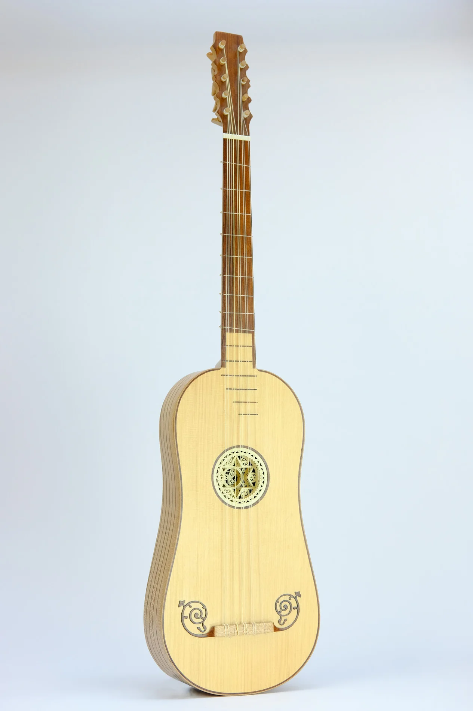
The Baroque Guitar is a type of lute that emerged during the Baroque period. It is characterized by its distinct shape. The Baroque Guitar typically has a smaller body and a shorter neck compared to the modern guitar, and it is played with a plectrum or pick. Its rounded hourglass makes the instrument more comfortable to play because it can rest the players leg. Rather than having a bowl and ribs, the body is in three parts; a face, a back, and the conection between them being a thin strip of wood that is shaped through soaking in water and ironing.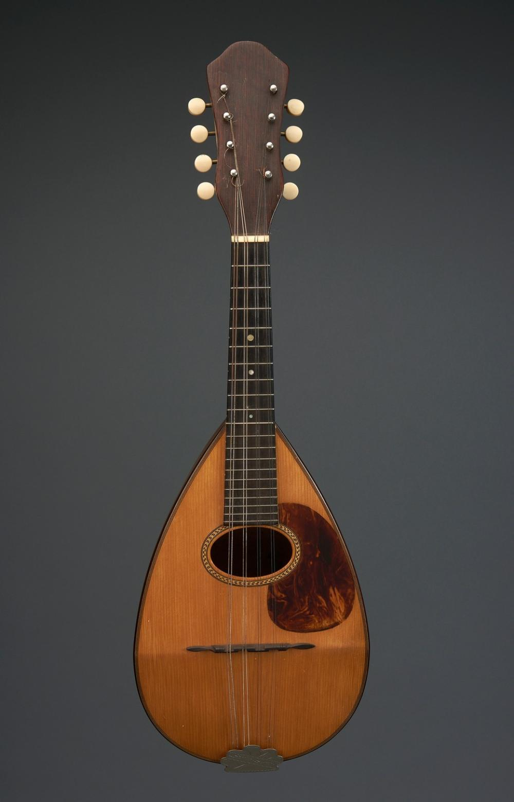
The Mandolin is a type of lute that emerged during the 17th century. It is characterized by its small size and bright sound, making it suitable for both solo performances and ensemble playing. The Mandolin typically has a shorter neck and a smaller body than other types of lutes, which contributes to its bright and lively tone. It also has an angled lower section of the face. It was particularly popular in Italy and other parts of Europe during the Baroque period. It served as a popular instrument for folk music, as well as classical music, and was often used in operas and othervocal music. It is uniquely known for sharing the tuning of the violin. Today, most modern mandolins share the same strings as violins. Most modern mandolins no longer have the traditional bowl back, and instead share a similar construction to the guitar, however keeping the egg-like shape.